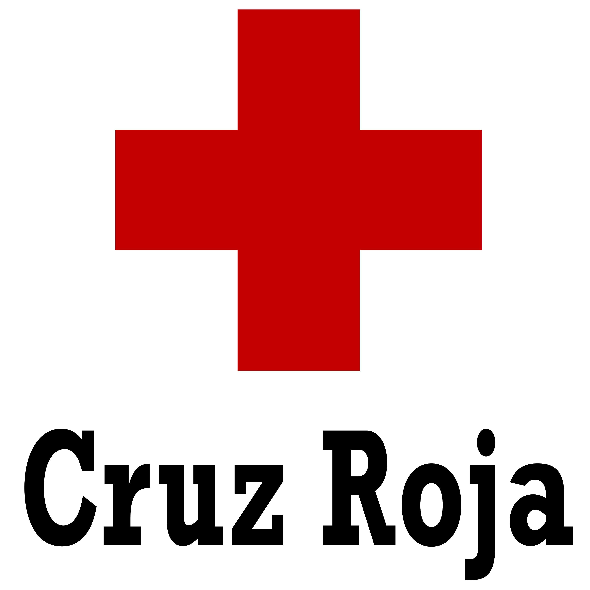

LA MEDICINA
La Medicina es una de las profesiones más antiguas que se conocen. Como futuro médico deberás aprender una serie de conocimientos básicos sobre las ciencias, las funciones biológicas, el cuerpo humano y su funcionamiento y sobre las distintas enfermedades físicas y mentales. Una parte importantísima de los estudios es adquirir una experiencia clínica mediante las prácticas en hospitales y siempre bajo la vigilancia de médicos experimentados.
Son objetivos y competencias en Medicina: Adquirir valores profesionales, actitudes y comportamientos éticos así como habilidades clínicas y habilidades de la comunicación. Conocer los fundamentos científcos de la medicina, y de salud pública y sistemas de salud. Manejar la información, tener un análisis crítico e iniciarse en la investigación.

TIPOS DE MEDICINAS
La Medicina es una de las profesiones más antiguas que se conocen. Como futuro médico deberás aprender una serie de conocimientos básicos sobre las ciencias, las funciones biológicas, el cuerpo humano y su funcionamiento y sobre las distintas enfermedades físicas y mentales. Una parte importantísima de los estudios es adquirir una experiencia clínica mediante las prácticas en hospitales y siempre bajo la vigilancia de médicos experimentados.
Son objetivos y competencias en Medicina: Adquirir valores profesionales, actitudes y comportamientos éticos así como habilidades clínicas y habilidades de la comunicación. Conocer los fundamentos científcos de la medicina, y de salud pública y sistemas de salud. Manejar la información, tener un análisis crítico e iniciarse en la investigación.